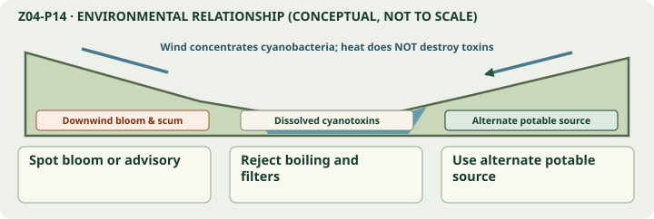

Z04-P14 · Water · New manuscript
Reject water near harmful algal blooms and blue-green scum
Recognize harmful algal bloom risks and avoid boiling or drinking cyanotoxin-contaminated water.
When it applies · Warm, slow-moving lakes, ponds, reservoirs and backwaters during late spring through autumn, especially downwind shorelines.
Equipment · Carried safe water, local lake or utility advisories and alternative drinking supply.

Actions
- Inspect the water surface and downwind shore for green, blue-green, turquoise or paint-like scum, surface mats, streaks or foul odor.[W15, W17]
- Keep people and pets out of contact with suspect bloom water and switch immediately to bottled or another verified safe supply.[W15, W17]
- Obey all local algal-toxin advisories even if the water looks clearer after wind shifts; dissolved cyanotoxins can persist without visible scum.[W16, W07]
Failure recognition · Trying to strain or boil blue-green lake water; heat does not destroy cyanotoxins and evaporation concentrates the toxins.[W15, W16]
Verify · Confirm the chosen supply has no visible bloom signs and is outside any active harmful algal bloom advisory.[W15, W16, W17]
Stop or change course · Never boil, bleach or use standard portable filters to drink from a suspected harmful algal bloom; obtain an alternate potable source.[W15, W16, W01]
Evidence and editorial notes
- W01 · CDC · How to Make Water Safe in an Emergency (2024-09-19)
- Section: Water with fuel or toxic chemicals in it · Conditions: Suspected fuel, toxic chemicals or radioactive contamination
Support: Use a different safe supply. Standard boiling and microbial disinfection do not make this water safe.
Limitations: Does not list contaminant-specific lab remediation; applies to emergency consumer decisions only. · Conflicting evidence: None across CDC/EPA emergency guidance.
Editorial note: Used as upstream hard-stop gate prior to any field treatment card. · Specialist reviewer: Drinking-water safety and public health
Primary source · checked 2026-11-24 - W07 · CDC · Drinking Water Advisories: An Overview (current web edition)
- Section: Boil water; Do not drink; Do not use · Conditions: Public-water system advisories
Support: The notice determines safe activities. Use another source for do-not-drink notices. Do not use tap water for any purpose under a do-not-use notice unless authorities direct otherwise.
Limitations: Local utility directives supersede general field summaries. · Conflicting evidence: None; exact advisory category is authoritative.
Editorial note: Distinguishes boil-water, do-not-drink, and do-not-use actions explicitly. · Specialist reviewer: Drinking-water utility and public health
Primary source · checked 2026-11-24 - W15 · US EPA · Learn About Harmful Algae, Cyanobacteria and Cyanotoxins (current web edition)
- Section: Cyanotoxins and water treatment · Conditions: Surface water with discolored scum, mats, foul odor, or active HAB advisory
Support: Do not use a suspect bloom as a drinking-water source. Routine field microbial treatment is not a validated method of removing cyanotoxins.
Limitations: Cyanotoxins can persist in visually clear water after a bloom dissipates. · Conflicting evidence: Contradicts naive boil-everything advice; CDC/EPA HAB warnings explicitly prohibit boiling HAB water.
Editorial note: Establishes HABs as a chemical-toxin rejection trigger, not a microbial boil target. · Specialist reviewer: Environmental health and drinking-water safety
Primary source · checked 2026-11-24 - W16 · US EPA · Learn About Harmful Algae, Cyanobacteria and Cyanotoxins (current web edition)
- Section: Learn About Harmful Algae, Cyanobacteria and Cyanotoxins · Conditions: Warm, nutrient-rich lakes, ponds, and slow rivers during algal bloom seasons
Support: Cyanobacteria can produce hepatotoxins and neurotoxins unaffected by routine boiling or simple chlorine disinfection.
Limitations: Visual absence of scum does not guarantee absence of dissolved cyanotoxins during an active advisory. · Conflicting evidence: None; aligns with CDC-HAB and MN-HAB.
Editorial note: Supports regional Upper Midwest lake/pond source screening in summer and autumn. · Specialist reviewer: Environmental health and public health
Primary source · checked 2026-11-24 - W17 · Minnesota PCA · Blue-Green Algae and Harmful Algal Blooms (current web edition)
- Section: Blue-green algae and harmful algal blooms · Conditions: Minnesota lakes and ponds during warm summer and early autumn
Support: Blue-green algae blooms can form quickly along downwind shorelines; keep people and animals out of suspect water and use alternative drinking supplies.
Limitations: Local bloom distribution shifts rapidly with wind and wave action. · Conflicting evidence: None; reinforces regional Upper Midwest applicability.
Editorial note: Links downwind shoreline accumulation to site-selection and water-source rejection. · Specialist reviewer: Regional water quality and public health
Primary source · checked 2026-11-24
Source lineage · CDC, EPA and Minnesota PCA HAB guidance; new manuscript · Classification · New manuscript.